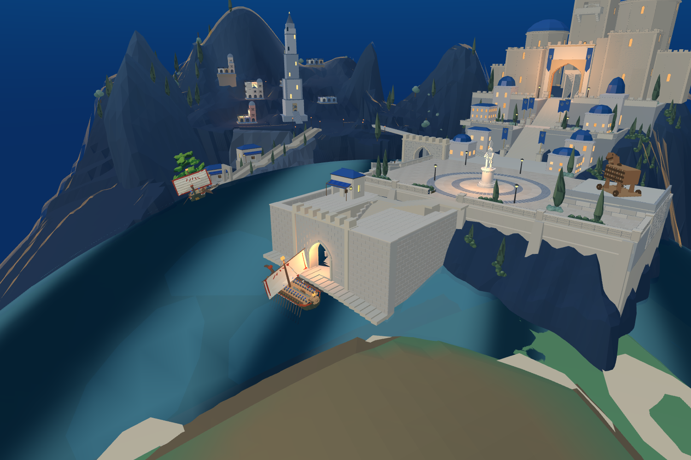
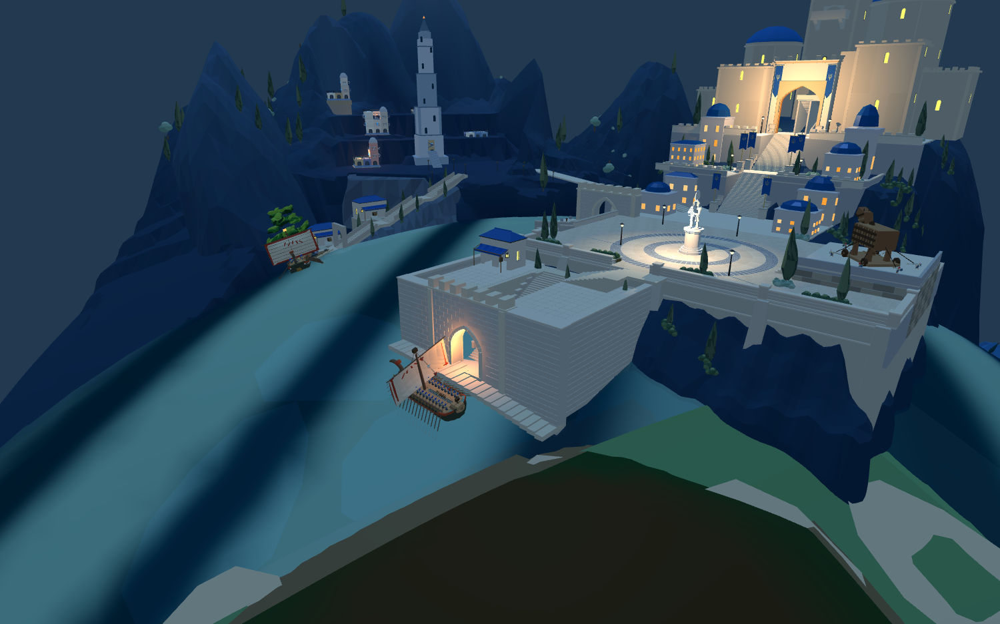

默认8931原游戏和同一Godot普通圣城已接入。使用原巡航槽位 ocean-warship-0，保留原船、桨手和更新逻辑。这里显示实际引擎截图。
真实巡航更新累计60秒，停泊位移0；当前82474三角面的静止船体与岸墙、海床检查通过。水深约5.69米。Godot读取网页导出的同一城堡坐标姿态，原船已脱离隐藏的旧港节点。



尚未完成：跳板接岸、连续靠泊、装卸及上下船；前港方整体量、山体与整体美术仍有明显差距。本轮为待泊接入，不代表港口整体验收。
下一轮周边2/5：沿原船货物与装卸逻辑安排岸边货物区，保持城门和通路净空。